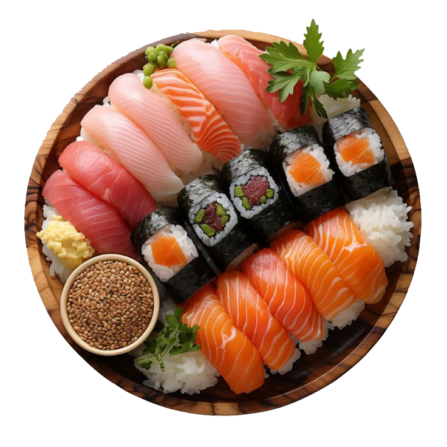

Recipe
Ingredients
Methods
INGREDIENTS

SUSHI RICE
1 cup short-grain Japanese rice
1 ¼ cups water (for cooking)
Short-grain rice
2 tablespoons rice vinegar
1 tablespoon sugar
½ teaspoon salt
Soy sauce
FISH
4–6 ounces raw fish (tuna, salmon, yellowtail, or shrimp)
TOPPINGS
Nori (Seaweed)
Wasabi
SIDES
Wasabi
Soy Sauce
Pickled Ginger